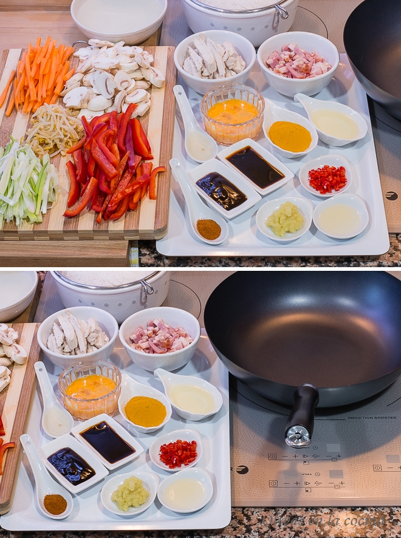
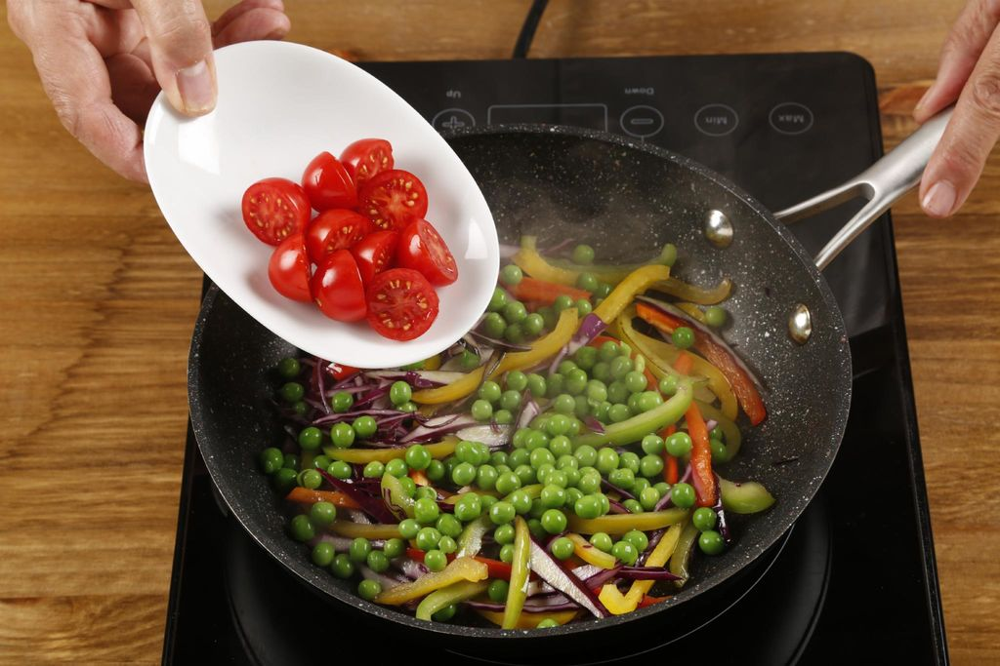
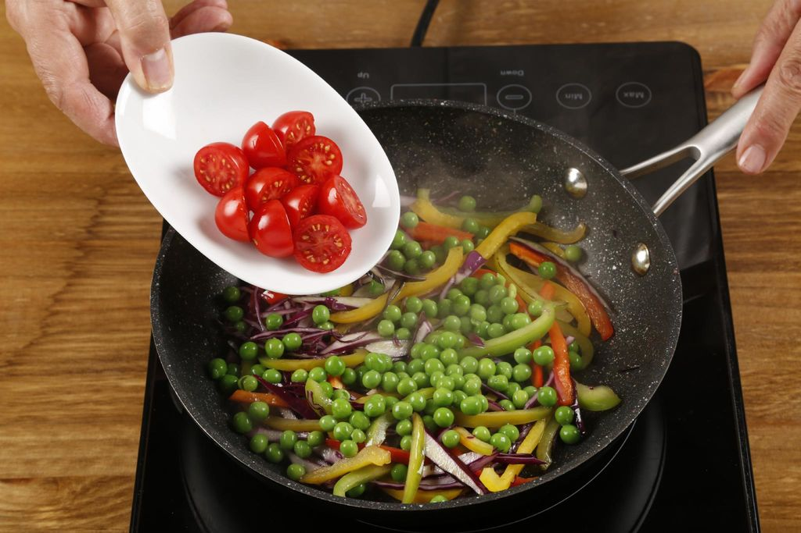
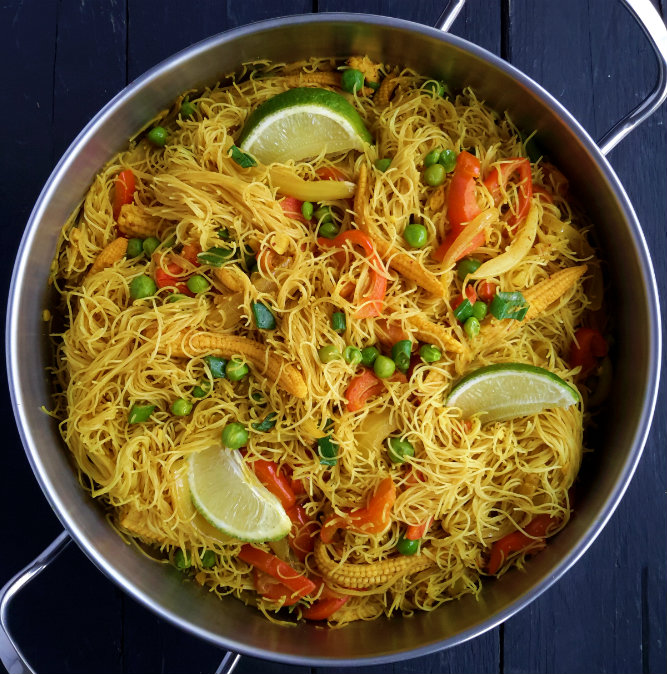
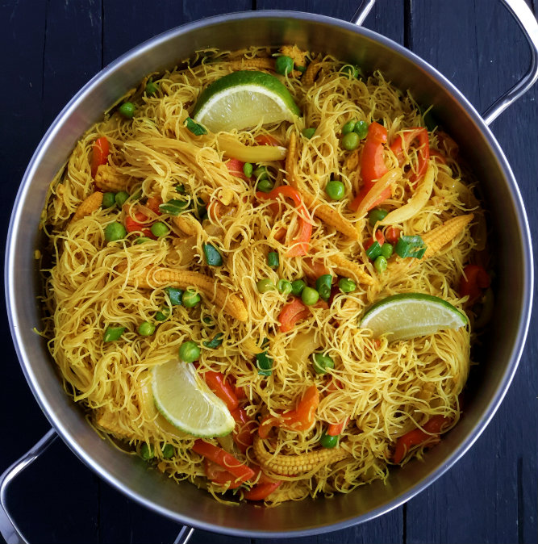

Fideos Singapur Índice
Historia Ingredientes Receta Explicación Receta Localización Geográfica
Historia
Fideos Singapur son una creación cantonesa y son muy comunes en los restaurantes de estilo cantonés y en los restaurantes para llevar en Hong Kong .
El plato es ahora un plato muy popular en los restaurantes chinos de comida para llevar en varios países.
Ir a inicio
Ingredientes

200g de vermicelli de arroz
125g de mazorca de maiz desgranada
90g de guisantes
250ml de agua
60ml salsa de soja
2 cebolletas cortadas
2 cucharadas de aceite
2 dientes de ajo picados
2 cucharadas de jengibre picado
2-4 cucharadas de curry en polvo
1 lima a gajos
1 cucharada de azúcar
media cebolla mediana cortada en láminas
Medio pimiento rojo cortado
Ir a inicio
Receta
Mojar los vermicelli en agua tibia hasta que estén al dente según las instrucciones del producto.
Enjuagar con agua fría, escurrir y reservar. Combinar agua, salsa de soja y azúcar. reservar.
En una sartén grande o wok, calentar el aceite a fuego medio-alto . Pochar la cebolla y pimiento rojo durante dos minutos.
Añadir el ajo, jengibre y guisantes. Pochar uno o dos minutos más sin dejar que el ajo se queme.
Añadir el curry y freír, removiendo constantemente , durante dos minutos más.
Añadir a la sartén las mazorcas de maíz y vermicelli de arroz y remover bien para cubrir los fideos con el curry.
Verter la mezcla de agua y salsa de soja y hervir a fuego medio hasta que los fideos hayan absorbido todo el líquido.Finalmente queda Probar y ajustar los sazonamientos al gusto. Retirar del fuego y añadir los tallos verdes de cebolla. Servir con gajos de lima
Ir a inicio
Explicación Receta
VIDEO
Ir a inicio
Localización Geográfica
Ir a inicio
Esta página está realizada por Jesús Cara Serrano Trabajo realizado por el Equipo 3, formado por: Marta Albarracín Martín, Jesús Cara Serrano,
Iván Fernández Aroca, Jonathan Martín Páez, Pablo Padial Salazar y Francisco Ruiz Nieto.
 


 
